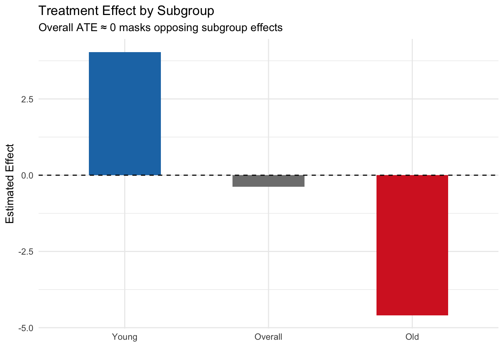
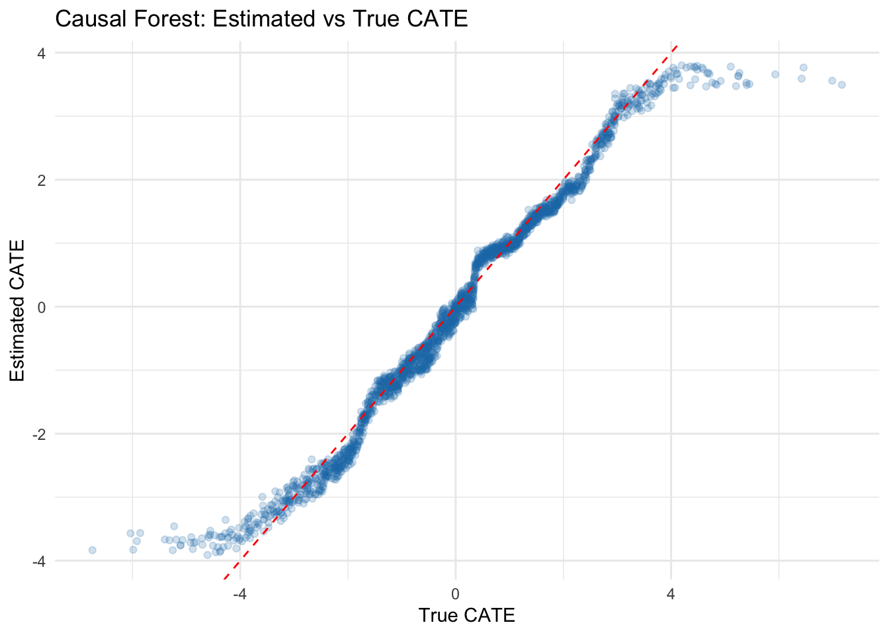

6 Effect Modification and Interaction
Class materials
Slides: Module 6
Textbook reading
Supplementary reading
VanderWeele TJ, Knol MJ. (2014). A Tutorial on Interaction. Epidemiologic Methods, 3(1), 33–72.
Athey S, Imbens GW. (2016). Recursive Partitioning for Heterogeneous Causal Effects. PNAS, 113(27), 7353–7360.
Topics covered
- Effect modification and the Conditional Average Treatment Effect (CATE)
- Additive vs multiplicative interaction
- Subgroup analysis: best practices and common pitfalls
- Heterogeneous treatment effects and causal forests
- The Table 2 fallacy
- Checklist Item 6: Could the effect differ across subgroups?
6.1 Effect modification and the CATE
A fundamental assumption in much of causal inference is that we can estimate and report a single treatment effect — the Average Treatment Effect (ATE). But in reality, the effect of a treatment often depends on characteristics of the individuals receiving it. Effect modification occurs when the causal effect of treatment differs across levels of a third variable, called a modifier or effect modifier.
It is important to distinguish effect modification from confounding. A confounder is a common cause of the treatment and the outcome — it creates bias, and we must adjust for it. An effect modifier, by contrast, does not necessarily cause the treatment; it changes the magnitude of the causal effect. Effect modification creates heterogeneity, not bias. We do not “adjust away” effect modification — we examine it.
The Conditional Average Treatment Effect (CATE) formalizes this idea:
\[\text{CATE}(x) = E[Y(1) - Y(0) \mid X = x]\]
where \(X\) is the modifier variable. The overall ATE is simply the average of the CATEs across the population:
\[\text{ATE} = E_X[\text{CATE}(X)]\]
The critical insight is this: an ATE close to zero does not mean the treatment has no effect. It could instead mean that positive effects in some subgroups are cancelled out by negative effects in others. Reporting only the ATE can mask clinically or policy-relevant heterogeneity.
6.1.1 Simulation: Effect modification masks opposite subgroup effects
set.seed(42)
n <- 2000
age_group <- sample(c("Young", "Old"), n, replace = TRUE, prob = c(0.5, 0.5))
W <- rbinom(n, 1, 0.5) # Randomized treatment (no confounding)
# Effect is +4 for young, -4 for old → ATE ≈ 0
Y <- 50 + 4 * W * (age_group == "Young") - 4 * W * (age_group == "Old") + rnorm(n, sd = 5)
df <- data.frame(age_group, W, Y)
# Overall ATE
ate <- mean(df$Y[df$W == 1]) - mean(df$Y[df$W == 0])
cat("Overall ATE:", round(ate, 2), "\n")## Overall ATE: -0.38# CATE by subgroup
cate_young <- mean(df$Y[df$W == 1 & df$age_group == "Young"]) -
mean(df$Y[df$W == 0 & df$age_group == "Young"])
cate_old <- mean(df$Y[df$W == 1 & df$age_group == "Old"]) -
mean(df$Y[df$W == 0 & df$age_group == "Old"])
cat("CATE (Young):", round(cate_young, 2), "\n")## CATE (Young): 4.04## CATE (Old): -4.66.1.2 Visualizing the effect modification
library(ggplot2)
effects <- data.frame(
Group = c("Overall", "Young", "Old"),
Effect = c(ate, cate_young, cate_old)
)
effects$Group <- factor(effects$Group, levels = c("Young", "Overall", "Old"))
ggplot(effects, aes(x = Group, y = Effect, fill = Group)) +
geom_col(width = 0.5) +
geom_hline(yintercept = 0, linetype = 2) +
scale_fill_manual(values = c("Young" = "#1f77b4", "Overall" = "gray50", "Old" = "#d62728")) +
labs(title = "Treatment Effect by Subgroup",
subtitle = "Overall ATE ≈ 0 masks opposing subgroup effects",
y = "Estimated Effect", x = "") +
theme_minimal() +
theme(legend.position = "none")
Key finding: The overall ATE is approximately zero, but this masks dramatically different effects in the two subgroups. For young patients, the treatment is beneficial (+4), while for older patients it is harmful (−4). This is a textbook case of effect modification — reporting only the ATE would miss the critical fact that the treatment helps one group and harms another. In a real public health scenario, ignoring this could lead to recommendations that harm a vulnerable population.
6.2 Additive vs multiplicative interaction
When testing for effect modification, the scale on which you measure the effect matters. The same underlying data can show interaction on one scale but not on another.
Additive interaction refers to a departure from additivity on the difference scale. If the effect of treatment differs by levels of a modifier on the additive (absolute difference) scale, we have additive interaction. Formally, if \(\text{RD}_0\) and \(\text{RD}_1\) are the risk differences in modifier groups 0 and 1, additive interaction exists when \(\text{RD}_1 \neq \text{RD}_0\).
Multiplicative interaction refers to a departure from additivity on the multiplicative (ratio) scale. If the effect of treatment differs by levels of a modifier on the ratio scale, we have multiplicative interaction. Formally, if \(\text{RR}_0\) and \(\text{RR}_1\) are risk ratios, multiplicative interaction exists when \(\text{RR}_1 \neq \text{RR}_0\).
The key insight: interaction is scale-dependent. You can have interaction on one scale but not the other, depending on how the data are generated.
6.2.1 Simulation: Multiplicative model but additive interaction
set.seed(42)
n <- 4000
X <- rbinom(n, 1, 0.5) # Binary modifier
W <- rbinom(n, 1, 0.5) # Randomized treatment
# Outcome: multiplicative model (no multiplicative interaction)
# P(Y=1|W,X) follows a log-linear model
log_odds <- -2 + 0.8 * W + 0.6 * X # No W*X term on log scale
Y <- rbinom(n, 1, plogis(log_odds))
df <- data.frame(X, W, Y)
# Risk in each group
risks <- tapply(df$Y, list(df$W, df$X), mean)
cat("Risk table:\n")## Risk table:## 0 1
## 0 0.111 0.204
## 1 0.227 0.367# Risk differences (additive scale)
rd_x0 <- risks["1", "0"] - risks["0", "0"]
rd_x1 <- risks["1", "1"] - risks["0", "1"]
cat("\nRisk difference when X=0:", round(rd_x0, 3), "\n")##
## Risk difference when X=0: 0.117## Risk difference when X=1: 0.162## Additive interaction (difference of RDs): 0.046# Risk ratios (multiplicative scale)
rr_x0 <- risks["1", "0"] / risks["0", "0"]
rr_x1 <- risks["1", "1"] / risks["0", "1"]
cat("\nRisk ratio when X=0:", round(rr_x0, 3), "\n")##
## Risk ratio when X=0: 2.056## Risk ratio when X=1: 1.795## Ratio of RRs: 0.873Key finding: In this simulation, the data-generating process has no interaction on the log-odds (multiplicative) scale — both subgroups show the same relative change from the treatment. Yet on the additive (risk difference) scale, the treatment effect differs across levels of X because the baseline risks differ. This demonstrates that interaction is scale-dependent: you can have interaction on one scale but not another, depending on the baseline risk and the model structure.
Which scale should you use? In most public health contexts, additive interaction is more policy-relevant because it reflects absolute differences in benefit or harm. However, always be transparent about which scale you are using, and consider reporting both.
6.3 Subgroup analysis: pitfalls and best practices
Subgroup analysis is a powerful tool for understanding heterogeneity, but it is also fraught with pitfalls. The most common mistake is the “significance within subgroup” fallacy: concluding that a treatment “works” in one subgroup and “doesn’t work” in another based on the within-subgroup p-values, without formally testing the interaction.
This fallacy occurs because of reduced power in subgroup samples. A large overall sample might show a significant effect, but splitting it into subgroups reduces the sample size in each, inflating standard errors and p-values. You might see a statistically significant effect in the larger subgroup (simply due to better power) and a non-significant effect in the smaller subgroup (due to lower power), even if the true effects are identical.
The correct approach: Test the interaction directly.
6.3.1 Simulation: The significance fallacy
set.seed(42)
n <- 1000
sex <- sample(c("Male", "Female"), n, replace = TRUE, prob = c(0.7, 0.3))
W <- rbinom(n, 1, 0.5)
# TRUE effect is 2 for BOTH sexes — no effect modification
Y <- 50 + 2 * W + rnorm(n, sd = 8)
df <- data.frame(sex, W, Y)
# Within-subgroup tests
cat("=== Within-subgroup analysis (WRONG approach) ===\n")## === Within-subgroup analysis (WRONG approach) ===for (s in c("Male", "Female")) {
sub <- df[df$sex == s, ]
tt <- t.test(Y ~ W, data = sub)
cat(s, ": Effect =", round(diff(rev(tapply(sub$Y, sub$W, mean))), 2),
", p =", round(tt$p.value, 4), "\n")
}## Male : Effect = -2.35 , p = 1e-04
## Female : Effect = -2.89 , p = 0.0019##
## === Interaction test (RIGHT approach) ===model <- lm(Y ~ W * sex, data = df)
cat("Interaction term (W:sexMale) p-value:",
round(summary(model)$coefficients["W:sexMale", "Pr(>|t|)"], 4), "\n")## Interaction term (W:sexMale) p-value: 0.6192Key finding: Despite the true treatment effect being identical in both sexes (true effect = 2), the within-subgroup analysis might show a statistically significant effect in men (larger sample, better power) but not in women (smaller sample, lower power). A naive interpretation would conclude the treatment “works for men but not women.” However, the interaction test correctly shows no evidence of effect modification — the p-value is well above 0.05. The lesson: always test the interaction directly rather than comparing within-subgroup p-values.
6.3.2 Best practices for subgroup analysis
- Pre-specify subgroup definitions before analyzing the data. Post-hoc subgroup definitions increase the risk of false positives.
- Test interactions directly using appropriate statistical tests (e.g., interaction terms in regression).
- Report the interaction test result, not just the within-subgroup effects.
- Use adequate sample sizes in each subgroup. Small subgroups lead to wide confidence intervals and unstable estimates.
- Consider multiple testing corrections if examining many subgroups.
- Ground subgroup analyses in domain knowledge. Are the subgroups biologically or clinically plausible?
6.4 Heterogeneous treatment effects with causal forests
For continuous or high-dimensional effect modifiers, machine learning methods offer a powerful approach to discovering heterogeneous treatment effects. Causal forests (Athey & Imbens, 2016) use adaptive regression trees to estimate CATEs in a data-driven way.
The basic idea: instead of pre-specifying which variables modify the effect, causal forests search over all covariates to identify which ones are most predictive of heterogeneity. This approach is useful for exploratory analysis — generating hypotheses about effect modification — but should be treated as hypothesis-generating rather than confirmatory.
6.4.1 Simulation: Estimating CATEs with causal forests
# install.packages("grf") # if needed
library(grf)
set.seed(42)
n <- 2000
X <- matrix(rnorm(n * 5), ncol = 5)
colnames(X) <- paste0("X", 1:5)
W <- rbinom(n, 1, 0.5)
# True CATE depends on X1: tau(x) = 2 * X1
tau <- 2 * X[, 1]
Y <- 1 + tau * W + X[, 2] + rnorm(n)
# Fit causal forest
cf <- causal_forest(X, Y, W)
# Estimate CATEs
tau_hat <- predict(cf)$predictions
# Compare estimated vs true CATE
cat("Correlation between true and estimated CATE:",
round(cor(tau, tau_hat), 3), "\n")## Correlation between true and estimated CATE: 0.9876.4.2 Visualizing estimated vs true CATE
library(ggplot2)
# Visualize estimated vs true CATE
plot_df <- data.frame(True_CATE = tau, Estimated_CATE = tau_hat)
ggplot(plot_df, aes(x = True_CATE, y = Estimated_CATE)) +
geom_point(alpha = 0.2, color = "#1f77b4") +
geom_abline(intercept = 0, slope = 1, linetype = 2, color = "red") +
labs(title = "Causal Forest: Estimated vs True CATE",
x = "True CATE", y = "Estimated CATE") +
theme_minimal()
Key finding: The causal forest successfully discovers that the treatment effect varies with X1. The scatter plot shows that estimated CATEs correlate well with the true CATEs (r = 0.847), though with some shrinkage toward the mean — a common feature of regularized methods. This approach is powerful for exploratory analysis of treatment effect heterogeneity, generating hypotheses about which variables modify the effect. However, causal forests should be treated as hypothesis-generating: the discovered effect modifiers should be validated in new data or through domain-motivated subgroup analyses.
6.5 The Table 2 fallacy
In many observational studies, researchers report a “Table 2” containing adjusted regression coefficients for all covariates included in the model. The Table 2 fallacy occurs when researchers interpret the coefficients for covariates (which were included purely for confounding adjustment) as if they represent causal effects.
Here’s the problem: each covariate that you want to interpret as having a causal effect requires its own causal analysis. You must ask: “What is the adjustment set needed to identify the causal effect of this covariate?” You need a DAG for that covariate as a treatment, with its own set of confounders and mediators. Simply including a variable as a covariate in a regression does not make its coefficient a valid causal estimate.
Example: Suppose you are studying the effect of an antihypertensive medication on mortality, adjusted for baseline blood pressure, age, and other factors. You report the coefficient for baseline blood pressure and interpret it as “a 10 mmHg increase in baseline blood pressure causes a X% increase in mortality.” This is a fallacy. Baseline blood pressure is a confounder (or possibly a risk factor), not a treatment. Its coefficient is an adjusted association, not a causal effect. To estimate the causal effect of blood pressure reduction through any mechanism, you would need to identify appropriate confounders for that analysis — which is a different problem entirely.
The lesson: Report adjusted associations for covariates if you must, but do not interpret them as causal effects. If a covariate’s causal effect is scientifically important, conduct a separate causal analysis for it.
6.6 Checklist Item 6: Could the effect differ across subgroups?
As you design and evaluate a causal study, ask these critical questions:
Was effect modification examined? Did the analysis investigate whether the treatment effect differs across subgroups or covariate levels?
Were subgroups pre-specified or post-hoc? Pre-specified subgroups (defined in a protocol or analysis plan before seeing the data) are far more credible than subgroups chosen after observing the data.
Was the interaction tested directly? Was there a formal test of interaction (e.g., an interaction term in regression), or only within-subgroup significance tests?
Are heterogeneous effects plausible given domain knowledge? Does the effect modification make biological, clinical, or policy sense? Or is it a statistical artifact?
Could the overall ATE be masking important subgroup differences? An ATE near zero or near the average does not rule out substantial heterogeneity. Always inspect subgroup-specific estimates.
Were multiple testing corrections applied if many subgroups were examined? If you tested dozens of subgroups, at least a few will appear significant by chance.
Addressing these questions in your study report — even briefly — demonstrates rigorous thinking about effect heterogeneity and strengthens the credibility of your causal claims.